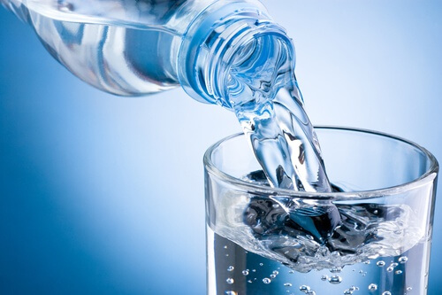

The Health Benefits of Water
Did you know that your body weight is approximately 60 percent water?.
The amount of water you need depends on a variety of factors, including the climate you live in, how physically active you are, and whether you're experiencing an illness or have any other health problems .
The body loses water through breathing, sweating, and digestion, which is why it's important to rehydrate by drinking fluids and eating foods that contain water.
Here are Top 3 Benefits of Water
-
Water Protects Your Tissues, Spinal Cord, and Joints
Water does more than just quench your thirst and regulate your body's temperature; it also keeps the tissues in your body moist.
-
Water Helps Your Body Remove Waste
Adequate water intake enables your body to excrete waste through perspiration, urination, and defecation. The kidneys and liver use it to help flush out waste, as do your intestines
-
How Much Water Do You Need?
Drink as much water as you can.People with certain health conditions can put themselves at risk of complications if they drink too much water. If you're not sure about your hydration level, look at your urine. If it's clear, you're in good shape. If it's dark, you're probably dehydrated.